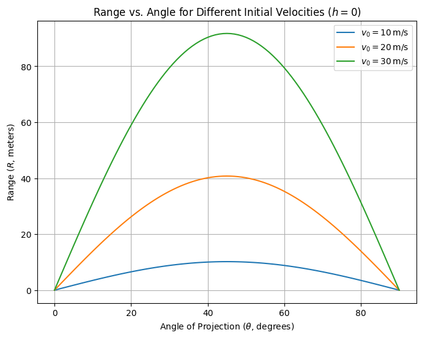
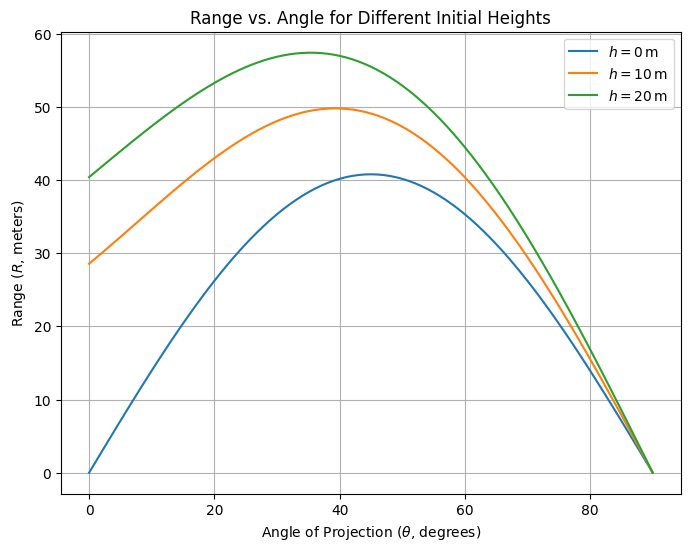
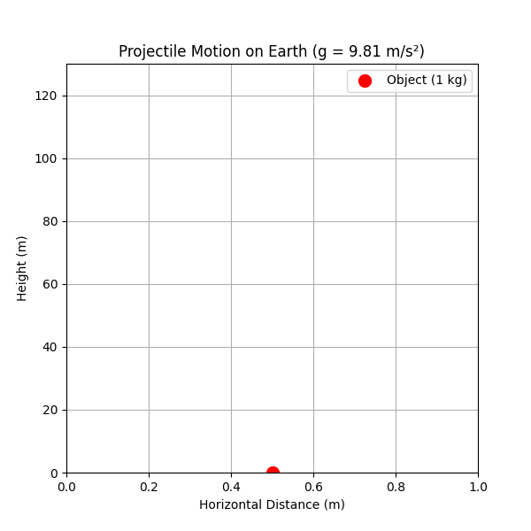
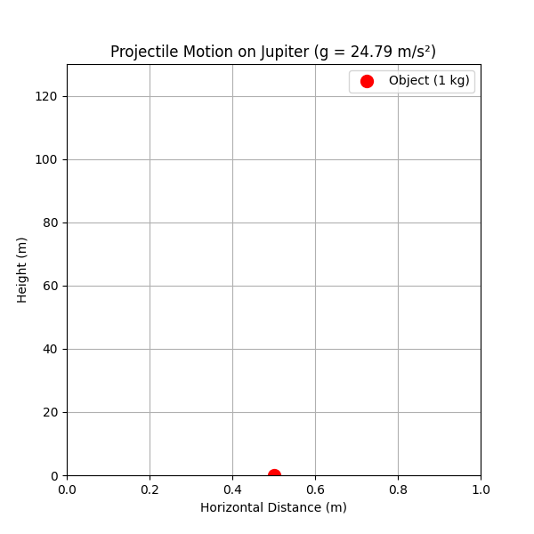
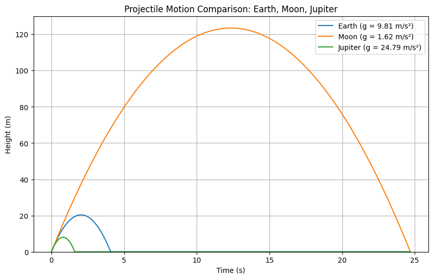

Problem 1
Theoretical Foundation: Derivation of Projectile Motion Equations
This section derives the equations governing projectile motion from Newton's second law, formulating differential equations for two-dimensional motion under gravity and solving them.
1. Newton's Second Law and Forces
Projectile motion is governed by Newton's second law, \(\vec{F} = m \vec{a}\), with gravity as the sole force: $$ \vec{F} = -mg \hat{j}, \quad \vec{a} = -g \hat{j}. $$ In components: $$ a_x = 0, \quad a_y = -g. $$
2. Differential Equations of Motion
Acceleration is the second derivative of position \(\vec{r}(t) = (x(t), y(t))\): $$ \frac{d^2 x}{dt^2} = 0, \quad \frac{d^2 y}{dt^2} = -g. $$
3. Solving the Horizontal Component
Integrate \(\frac{d^2 x}{dt^2} = 0\): $$ \frac{dx}{dt} = v_x, \quad x(t) = v_x t + x_0. $$ With \(x_0 = 0\) and \(v_x = v_0 \cos\theta\): $$ x(t) = v_0 \cos\theta \, t. $$
4. Solving the Vertical Component
Integrate \(\frac{d^2 y}{dt^2} = -g\): $$ \frac{dy}{dt} = -g t + v_y, \quad y(t) = -\frac{1}{2} g t^2 + v_y t + y_0. $$ With \(v_y = v_0 \sin\theta\) and \(y_0 = h\): $$ y(t) = -\frac{1}{2} g t^2 + v_0 \sin\theta \, t + h. $$
5. General Equations of Motion
Combine both components: $$ \vec{r}(t) = (v_0 \cos\theta \, t, -\frac{1}{2} g t^2 + v_0 \sin\theta \, t + h). $$ Eliminate \(t\): $$ y(x) = -\frac{g}{2 v_0^2 \cos^2\theta} x^2 + \tan\theta \, x + h. $$
6. Family of Solutions and Initial Conditions
The equations depend on \(v_0\), \(\theta\), and \(h\). For \(h = 0\), solve \(y(t) = 0\): $$ t = \frac{2 v_0 \sin\theta}{g}. $$ The range \(R\) is: $$ R = \frac{v_0^2 \sin 2\theta}{g}. $$ This family of solutions illustrates the versatility of projectile motion.
Analysis of the Range: Dependence on Angle of Projection
This section analyzes the horizontal range of a projectile as a function of the angle of projection, leveraging the equations derived previously. We determine the time of flight, investigate trigonometric dependencies, explore parameter effects, and identify critical angles, maintaining a theoretical focus without numerical computation.
1. Expressing the Horizontal Range
The horizontal range \(R\) is the distance traveled along the x-axis when the projectile returns to a specified height (typically \(y = 0\) for level ground). From the position equations: $$ x(t) = v_0 \cos\theta \, t, \quad y(t) = -\frac{1}{2} g t^2 + v_0 \sin\theta \, t + h, $$ \(R\) is \(x(t)\) evaluated at the time of flight \(t_f\), when \(y(t_f) = 0\). Thus: $$ R = x(t_f) = v_0 \cos\theta \, t_f. $$ The expression for \(t_f\) is derived next.
2. Determining the Time of Flight
The time of flight \(t_f\) is the duration from launch to landing. Set \(y(t) = 0\) for a projectile launched from height \(h\): $$ 0 = -\frac{1}{2} g t^2 + v_0 \sin\theta \, t + h. $$ This is a quadratic equation in \(t\): $$ -\frac{1}{2} g t^2 + v_0 \sin\theta \, t + h = 0. $$ Multiply through by \(-2/g\) to simplify: $$ t^2 - \frac{2 v_0 \sin\theta}{g} t - \frac{2 h}{g} = 0. $$ Solve using the quadratic formula \(t = \frac{-b \pm \sqrt{b^2 - 4ac}}{2a}\), where \(a = 1\), \(b = -\frac{2 v_0 \sin\theta}{g}\), \(c = -\frac{2 h}{g}\): $$ t = \frac{\frac{2 v_0 \sin\theta}{g} \pm \sqrt{\left(\frac{2 v_0 \sin\theta}{g}\right)^2 - 4 \cdot 1 \cdot \left(-\frac{2 h}{g}\right)}}{2}. $$ Simplify the discriminant: $$ \Delta = \left(\frac{2 v_0 \sin\theta}{g}\right)^2 + \frac{8 h}{g} = \frac{4 v_0^2 \sin^2\theta}{g^2} + \frac{8 h}{g}. $$ Thus: $$ t = \frac{\frac{2 v_0 \sin\theta}{g} \pm \sqrt{\frac{4 v_0^2 \sin^2\theta + 8 h g}{g^2}}}{2} = \frac{v_0 \sin\theta \pm \sqrt{v_0^2 \sin^2\theta + 2 h g}}{g}. $$ For \(h = 0\) (level ground), this reduces to: $$ t_f = \frac{2 v_0 \sin\theta}{g}, $$ selecting the positive root (time after launch). Substitute into the range: $$ R = v_0 \cos\theta \cdot \frac{2 v_0 \sin\theta}{g} = \frac{2 v_0^2 \sin\theta \cos\theta}{g}. $$ Using the identity \(2 \sin\theta \cos\theta = \sin 2\theta\): $$ R = \frac{v_0^2 \sin 2\theta}{g}. $$
3. Variation with Angle of Projection
The range \(R = \frac{v_0^2 \sin 2\theta}{g}\) depends on \(\sin 2\theta\), which varies with \(\theta\): - At \(\theta = 0^\circ\) or \(90^\circ\), \(\sin 2\theta = 0\), so \(R = 0\) (no horizontal travel). - The term \(\sin 2\theta\) oscillates between \(-1\) and \(1\), with a maximum of \(1\) when \(2\theta = 90^\circ\) (i.e., \(\theta = 45^\circ\)). - Symmetry exists: \(\sin 2(90^\circ - \theta) = \sin (180^\circ - 2\theta) = \sin 2\theta\), so \(R(\theta) = R(90^\circ - \theta)\) (e.g., \(30^\circ\) and \(60^\circ\) yield equal ranges).
This trigonometric dependence indicates \(R\) peaks at an intermediate angle and decreases symmetrically around it.
4. Effect of Parameters
- Initial Velocity (\(v_0\)): Since \(R \propto v_0^2\), doubling \(v_0\) quadruples \(R\), amplifying the range for all angles. The shape of \(R\) vs. \(\theta\) remains unchanged, but the amplitude scales.
- Gravitational Acceleration (\(g\)): \(R \propto 1/g\), so increasing \(g\) (e.g., on a planet with stronger gravity) reduces \(R\) proportionally. The angle dependence persists, but the curve compresses vertically.
- Initial Height (\(h\)): For \(h > 0\), \(t_f\) increases (per the quadratic solution), extending \(R\). The maximum range angle shifts below \(45^\circ\), as vertical flight time contributes more to horizontal distance.
5. Key Angles
- Maximum Range Angle: For \(h = 0\), \(R\) is maximized when \(\sin 2\theta = 1\), i.e., \(\theta = 45^\circ\), balancing horizontal and vertical components optimally.
- Complementary Angles: Pairs like \(30^\circ\) and \(60^\circ\) yield identical ranges due to \(\sin 2\theta\) symmetry.
- Effect of Height: When \(h \neq 0\), the optimal angle decreases, derivable by maximizing the full range expression (not computed here).
Practical Applications of Projectile Motion
This section explores the relevance of projectile motion in real-world contexts, modifications to the idealized model, and the impact of simplifying assumptions. The equations \(x(t) = v_0 \cos\theta \, t\) and \(y(t) = -\frac{1}{2} g t^2 + v_0 \sin\theta \, t + h\) with range \(R = \frac{v_0^2 \sin 2\theta}{g}\) for \(h = 0\) serve as the foundation.
1. Real-World Scenarios
Projectile motion is crucial in:
-
Sports: Basketball shots, soccer kicks, and golf drives follow parabolic paths influenced by \(\theta\) and \(v_0\).
-
Military: Artillery shells' trajectories depend on \(v_0\) and \(\theta\), with terrain and wind affecting predictions.
-
Space Exploration: Initial rocket phases resemble projectile motion, with \(g\) varying with altitude.
2. Modifications for Uneven Terrain
For uneven terrain, adjust the final height \(y_f\):
Solve for \(t_f\): $$ t_f = \frac{v_0 \sin\theta \pm \sqrt{(v_0 \sin\theta)^2 - 2 g (h - y_f)}}{g}. $$ The range is: $$ R = v_0 \cos\theta \, t_f. $$
3. Incorporating Air Resistance
Air resistance, modeled as \(F_d = -k v\) or \(F_d = -c v^2\), modifies the equations of motion: $$ \frac{d^2 x}{dt^2} = -\frac{c}{m} \dot{x}, \quad \frac{d^2 y}{dt^2} = -g - \frac{c}{m} \dot{y}. $$ These require numerical methods for solutions, reducing range and altering trajectory shape.
4. Simplifying Assumptions and Their Impact
Assumptions like no drag, flat ground, constant \(g\), and point mass simplify the model but limit accuracy. Real-world scenarios need adjustments for air resistance, terrain, varying \(g\), and object rotation.
These refinements ensure more accurate predictions beyond the idealized \(R = \frac{v_0^2 \sin 2\theta}{g}\).
Conclusion
The theoretical framework provides a rigorous foundation for analyzing projectile range as a function of the angle of projection, with dependencies on initial velocity \(v_0\), angle \(\theta\), and initial height \(h\). For \(h = 0\), the range is expressed as \(R = \frac{v_0^2 \sin 2\theta}{g}\). Introducing a non-zero \(h\) extends flight time and shifts the optimal angle.
This model applies to sports, military, and space exploration, but requires adaptations for real-world dynamics. Adjustments for uneven terrain, air resistance, and varying \(g\) enhance predictive accuracy. Computational simulations and visualizations clarify parametric effects and practical implications.
These efforts underscore the versatility of projectile motion, providing a robust platform for theoretical and practical applications.
Codes and Plots
Range vs. Angle for Varying Initial Velocities

import numpy as np
import matplotlib.pyplot as plt
# Constants
v0 = 20.0 # Initial velocity (m/s)
g = 9.81 # Gravitational acceleration (m/s^2)
# Angle array (0 to 90 degrees, in radians)
theta_deg = np.linspace(0, 90, 91) # Degrees
theta = np.radians(theta_deg) # Radians
# Range calculation: R = (v0^2 * sin(2*theta)) / g
R = (v0**2 * np.sin(2 * theta)) / g
# Plotting
plt.figure(figsize=(8, 6))
plt.plot(theta_deg, R, label=f'$v_0 = {v0} \, \mathrm{{m/s}}$', color='blue')
plt.xlabel('Angle of Projection ($\\theta$, degrees)')
plt.ylabel('Range ($R$, meters)')
plt.title('Range vs. Angle of Projection ($h = 0$)')
plt.grid(True)
plt.legend()
plt.show()
Range vs. Angle with Initial Height

import numpy as np
import matplotlib.pyplot as plt
# Constants
v0 = 20.0 # Initial velocity (m/s)
g = 9.81 # Gravitational acceleration (m/s^2)
h_values = [0, 10, 20] # Initial heights (m)
# Angle array
theta_deg = np.linspace(0, 90, 91)
theta = np.radians(theta_deg)
# Plotting
plt.figure(figsize=(8, 6))
for h in h_values:
# Time of flight: t = (v0*sin(theta) + sqrt((v0*sin(theta))^2 + 2gh)) / g
t_f = (v0 * np.sin(theta) + np.sqrt((v0 * np.sin(theta))**2 + 2 * g * h)) / g
R = v0 * np.cos(theta) * t_f
plt.plot(theta_deg, R, label=f'$h = {h} \, \mathrm{{m}}$')
plt.xlabel('Angle of Projection ($\\theta$, degrees)')
plt.ylabel('Range ($R$, meters)')
plt.title('Range vs. Angle for Different Initial Heights')
plt.grid(True)
plt.legend()
plt.show()
Projectile Motion Demonstration
Earth (g = 9.81 m/s²)

Moon (g = 1.62 m/s²)
Jupiter (g = 24.79 m/s²)

Projectile Motion Comparison

import numpy as np
import matplotlib.pyplot as plt
from matplotlib.animation import FuncAnimation
from IPython.display import display, Image
# Constants
m = 1.0 # Mass (kg)
v0 = 20.0 # Initial upward velocity (m/s)
h0 = 0.0 # Initial height (m)
# Gravitational accelerations (m/s^2)
planets = {
'Earth': 9.81, # Earth
'Moon': 1.62, # Moon
'Jupiter': 24.79 # Jupiter
}
# Function to calculate position
def height(t, v0, g, h0):
return h0 + v0 * t - 0.5 * g * t**2
# Function to create and save animation as GIF
def animate_projectile(planet, g):
t_max = 2 * v0 / g
t = np.linspace(0, t_max, 100)
h = height(t, v0, g, h0)
h = np.maximum(h, 0)
fig, ax = plt.subplots(figsize=(6, 6))
ax.set_xlim([0, 1])
ax.set_ylim([0, 130]) # Fixed max height for comparison (Moon reaches ~123 m)
ax.set_xlabel('Horizontal Distance (m)')
ax.set_ylabel('Height (m)')
ax.set_title(f'Projectile Motion on {planet} (g = {g} m/s²)')
ax.grid(True)
x_data = np.array([0.5])
ball, = ax.plot(x_data, [h[0]], 'ro', markersize=10, label='Object (1 kg)')
ax.legend()
def update(frame):
ball.set_data(x_data, [h[frame]])
return ball,
anim = FuncAnimation(fig, update, frames=range(len(t)), interval=50, repeat=True)
gif_filename = f'{planet}_projectile.gif'
anim.save(gif_filename, writer='pillow', fps=20)
plt.close(fig)
display(Image(filename=gif_filename))
# Static comparison plot
def compare_trajectories():
fig, ax = plt.subplots(figsize=(10, 6))
ax.set_xlabel('Time (s)')
ax.set_ylabel('Height (m)')
ax.set_title('Projectile Motion Comparison: Earth, Moon, Jupiter')
ax.grid(True)
max_t = 2 * v0 / planets['Moon'] # Longest flight time (Moon)
t = np.linspace(0, max_t, 200)
for planet, g in planets.items():
h = height(t, v0, g, h0)
h = np.maximum(h, 0)
ax.plot(t, h, label=f'{planet} (g = {g} m/s²)')
ax.set_ylim(0, 130) # Fixed scale to show Moon's max height
ax.legend()
plt.show()
# Run animations
for planet, g in planets.items():
animate_projectile(planet, g)
# Show static comparison
compare_trajectories()